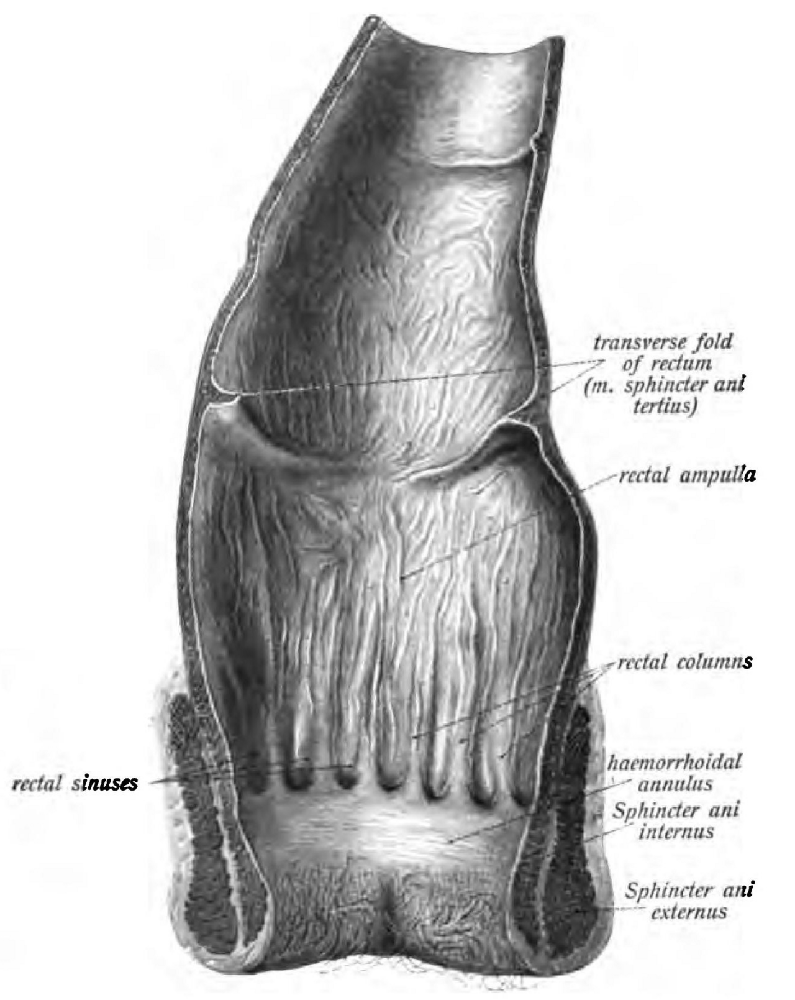
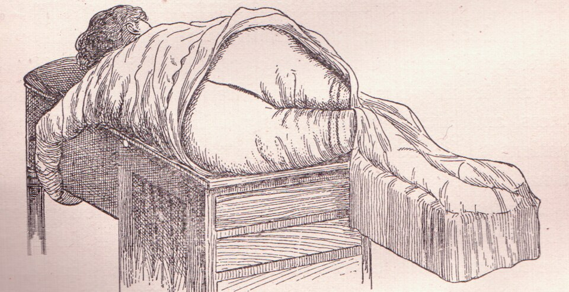
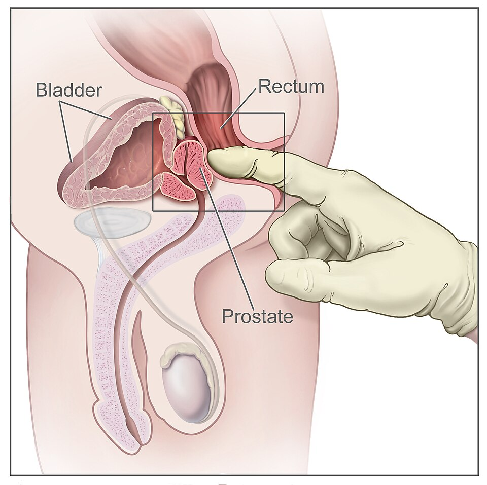
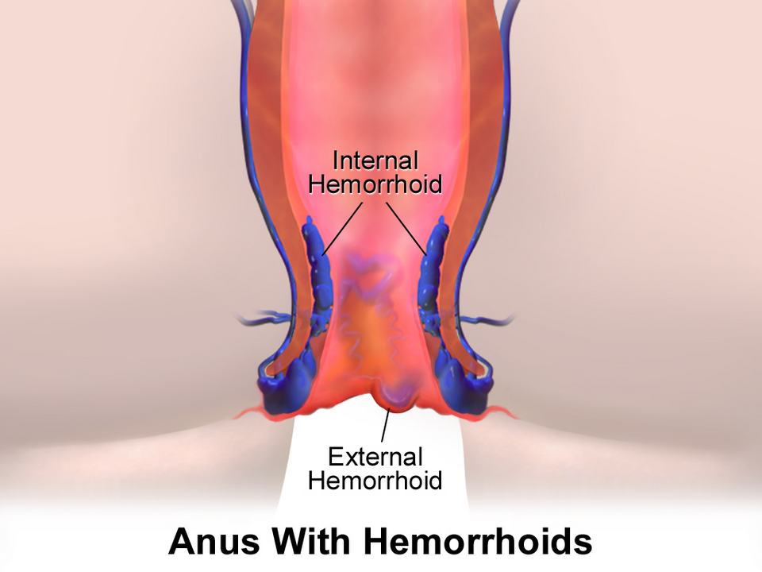
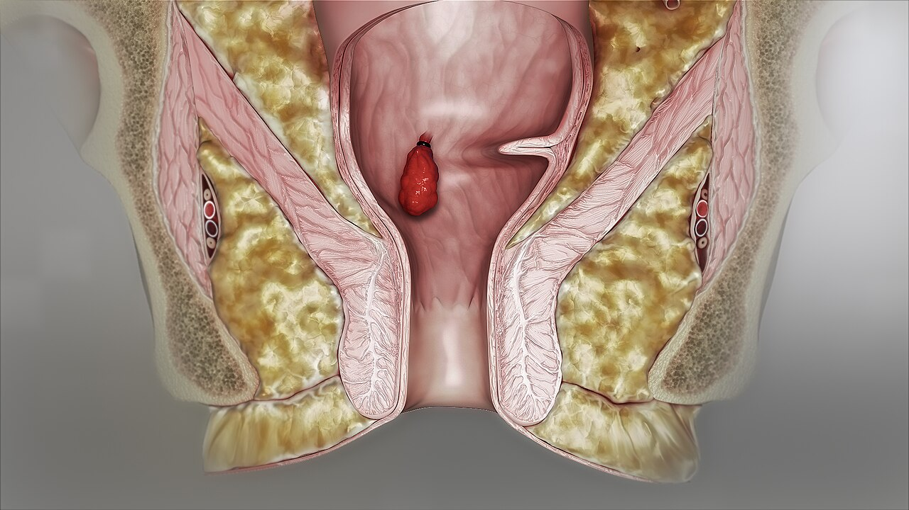
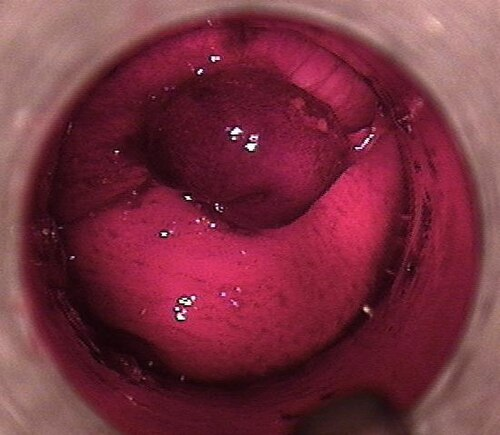
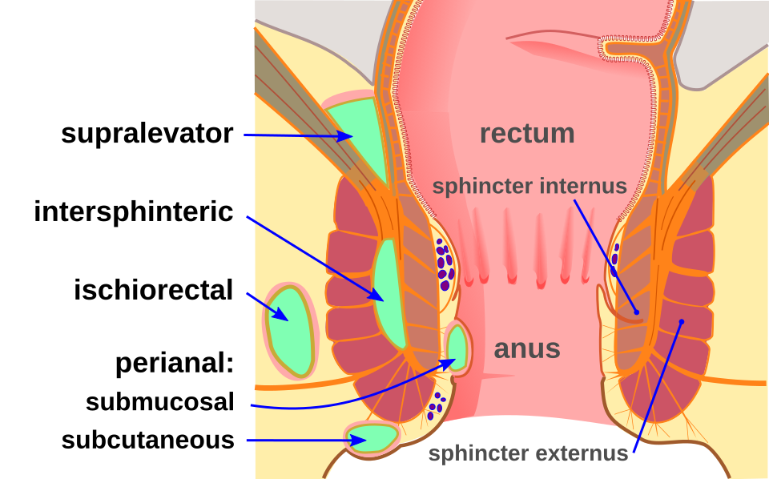
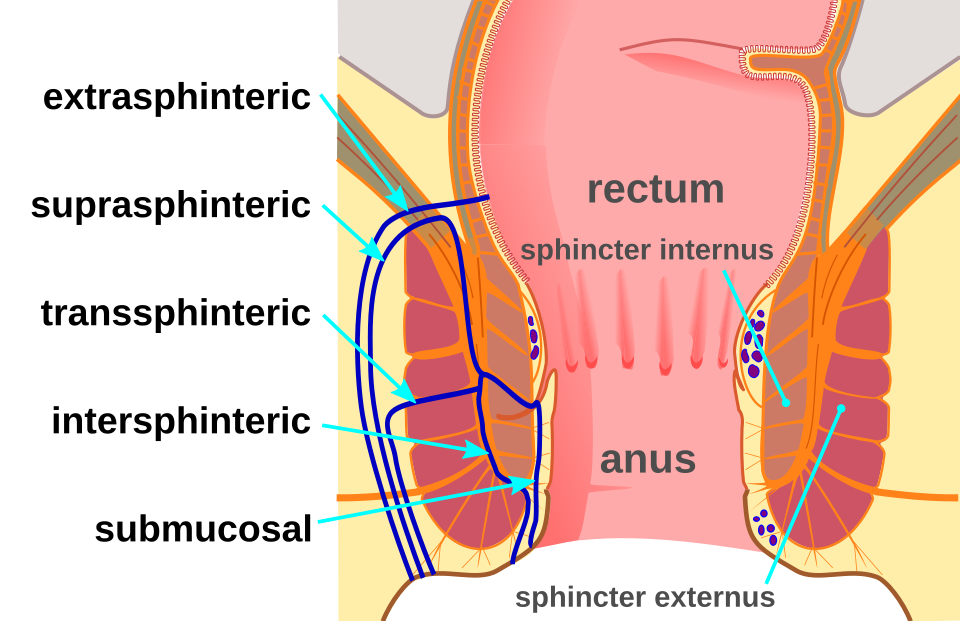
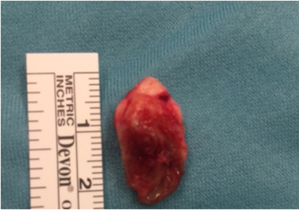

פרוקטולוגיה
טחורים, פיסורה, מורסה ופיסטולה, סינוס פילונידלי וגרד: מהסיפור והבדיקה ועד הטיפול במרפאה ובחדר הניתוח
בסוף המפגש תדעו
- לתאר את האנטומיה של תעלת פי הטבעת: הקו המשונן, הסוגרים, כריות הטחורים והבלוטות האנאליות
- לקחת אנמנזה ממוקדת ולבצע בדיקה פרוקטולוגית: מנח, הסתכלות, בדיקה רקטלית ואנוסקופיה
- לדרג טחורים פנימיים ולבחור טיפול: שמרני, במרפאה או ניתוח
- לאבחן פיסורה ולהכיר את סולם הטיפול בה
- לטפל במורסה סביב פי הטבעת ולהבין איך היא הופכת לפיסטולה
- לזהות סינוס פילונידלי ומצבים דחופים כמו גנגרנה של פורנייה
תעלת פי הטבעת

👆 לחצו על אזור בציור כדי לקרוא עליו
מה שהאצבע מרגישה מעל לתעלה. בבדיקה רקטלית בודקים את דופן החלחולת, את עצם הזנב ושרירי הלבטור מאחור. מלפנים: את הערמונית או רקטוצלה. גוש: מיקום לפי שעון, גודל, קשה או רך, נייד או מקובע. גם המרחק מהטבעת השרירית.
מעל הקו המשונן: רירית עמודית עם עצבוב אוטונומי בלבד. לכן כמעט בלי כאב. כאן יושבות כריות הטחורים הפנימיים (שמאל לטרלי, ימין קדמי וימין אחורי). כאן מניחים גומייה.
הגבול בין אנדודרם לאקטודרם, באמצע תעלה של כ-4 ס״מ. בבסיס העמודות יש קריפטות שמתנקזות אליהן 6–12 בלוטות אנאליות, בעיקר מאחור. בלוטה חסומה היא נקודת ההתחלה של רוב המורסות והפיסטולות.
מתחת לקו המשונן: אפיתל קשקשי בלי שערות ובלוטות, עם עצבוב סומטי עשיר. לכן כאן כואב: פיסורה (בדרך כלל בקו האמצע האחורי), טחור חיצוני עם קריש או גומייה שהונחה נמוך מדי.
הפנימי: המשך מעובה של השכבה המעגלית של החלחולת, שריר חלק עם עצבוב אוטונומי, ב-2–4 ס״מ התחתונים. העווית שלו מחזיקה את הפיסורה פתוחה. אותו חותכים חלקית ב-LIS.
החיצוני: שריר שלד שבשליטה רצונית, עצבוב מהעצב הפודנדלי. כמה ממנו נחתך קובע את הסיכון לבריחה בניתוח פיסטולה.
הסיפור כמעט תמיד נותן את האבחנה
איך בודקים פי טבעת
- הסבר ומלווה/ה בחדר לכל אורך הבדיקה, בלי קשר למין המטופל והבודק
- מנח: שכיבה על הצד השמאלי, או מנח "סכין מתקפלת" על שולחן פרוקטולוגי
- הסתכלות: הפרדה עדינה של העכוזים. לבקש לכווץ ואז ללחוץ כלפי מטה (צניחה, ירידת רצפת האגן)
- מישוש העור סביב לפני הכנסת האצבע: רגישות. גם מאפשר למטופל להתכונן
- בדיקה רקטלית עם ג׳ל: אורך התעלה עד הפובורקטליס, עצם הזנב ושרירי הלבטור, ערמונית או רקטוצלה מלפנים. בסוף סריקה של התעלה עצמה עם הפלנגה הראשונה
- לסיום: לכווץ ואז Valsalva: הסוגרים צריכים להירפות
- אנוסקופיה: הרבה ג׳ל, מכניסים עם המוביל, מוציאים אותו ומסובבים כדי לראות את כל ההיקף


כריות שזזו ממקומן
- כריות נורמליות בתת-הרירית: בשמאל לטרלי, בימין קדמי ובימין אחורי. הדימום מהן עורקי, בגלל חיבורים ישירים בין עורקים לוורידים
- מה מקדם אותן: עצירות, מאמץ וישיבה ארוכה בשירותים. גם הזדקנות של רקמת התמיכה
- פנימיים: מעל הקו המשונן. התלונה השכיחה: דם טרי בלי כאב ביציאה, עם או בלי בליטה
- חיצוניים: מתחת לקו המשונן, מכוסים בעור עם עצבוב סומטי. כואבים כשנוצר בהם קריש

סולם הטיפול
- שתייה: לפחות 64 אונקיות ביום (כ-1.9 ליטר)
- סיבים: 20–35 גרם ביום
- לא יותר מ-2–3 דקות בשירותים, בלי טלפון ובלי לקרוא
- אמבטיית ישיבה חמה אחרי יציאה
- משחות ופתילות: מעט ראיות
- קשירה בגומייה: השכיחה והיעילה ביותר. מעל הקו המשונן. לכן כמעט בלי כאב. כאב חזק: הגומייה נמוכה מדי, מורידים מיד
- בנוטלי נוגדי קרישה וטסיות: זהירות. הכיב שנוצר אחרי ימים יכול לדמם
- הזרקה טרשתית (כ-1 מ״ל): מתאימה לנוטלי נוגדי קרישה
- קרישה באינפרא-אדום
- כריתה סגורה (Ferguson): פחות כאב, ריפוי מהיר ופחות דימום מהפתוחה (Milligan-Morgan)
- כורתים רק את העודף ושומרים על הסוגר הפנימי. לא כורתים שלוש כריות בלי גשרי רירית (היצרות)
- בלי אנטיביוטיקה מונעת ובלי טמפון
- סיכות (stapled): פחות כאב, יותר חזרות
קשירה בגומייה במרפאה


קריש, כליאה ונמק
סדק קטן, כאב גדול
- מה זה: קרע אליפטי בעור התעלה, מפי הטבעת כלפי הקו המשונן
- למה לא נרפא: הכאב גורם לעווית של הסוגר, העווית מורידה זרימת דם והקרע נשאר באיסכמיה
- איפה: בקו האמצע האחורי ב-75%. בקו האמצע הקדמי בעיקר בנשים
- כרונית: מעל 6–8 שבועות
- האבחנה מהסיפור. הפרדה עדינה של העכוזים מראה את הסדק. בדיקה רקטלית ואנוסקופיה לרוב נדחות בגלל הכאב
להרפות את הסוגר
מורסה סביב פי הטבעת: מאיפה ולאן
- מקור: בלוטה אנאלית שנחסמה בקריפטה בקו המשונן. הזיהום מתחיל בין הסוגרים ומתפשט
- לאן: כלפי מטה לעור (סביב פי הטבעת), דרך הסוגר החיצוני לחלל האיסכיורקטלי, למעלה מעל הלבטור, או בקו האמצע האחורי לחלל הפוסט-אנאלי העמוק ומשם לשני הצדדים ("פרסה")
- כ-10% מסיבות אחרות: קרוהן, חבלה, HIV, מחלות מין, קרינה, גוף זר, ממאירות
- הסיפור: כאב קבוע ופועם שמתפתח בהדרגה, נפיחות, אודם ותנודה

מנקזים מיד וקרוב לפי הטבעת
- אפשר במרפאה בהרדמה מקומית או בחדר ניתוח
- במקום הכי תנודתי וקרוב ככל האפשר לפי הטבעת, כדי שהפיסטולה שאולי תיווצר תהיה קצרה
- חתך צלב והסרת הפינות, כדי שלא ייסגר מוקדם
- לא מפרקים מחיצות באגרסיביות: סכנה לסוגר, לעצב הפודנדלי ולדימום
- חלל מעל 5 ס״מ: חתכים נוספים וגשר בנקז
כשהמורסה משאירה מנהרה
- כמחצית מהמטופלים אחרי מורסה יפתחו פיסטולה: פתח פנימי בקריפטה ופתח חיצוני בעור
- הסיפור: הפרשה כרונית, או מחזור של כאב ונפיחות שמוקל כשהיא מתנקזת
- חוק גודסל: פתח חיצוני לפני הקו הרוחבי הולך ישר לתעלה. פתח מאחור מתעקל לקו האמצע האחורי (פתח קדמי רחוק מ-3 ס״מ יכול להיות המשך של "פרסה" אחורית)
- פתחים בשני הצדדים: חלל פוסט-אנאלי עמוק. הרבה פתחים ("זילוף"): לחשוב על קרוהן
- לא ברור? MRI של האגן בפרוטוקול פיסטולה

קן של שערות בקפל העכוז
- צעירים, בדרך כלל באמצע עד סוף שנות ה-20. כ-70,000 מטופלים בשנה בארה״ב
- המנגנון: שערות נשאבות לעור דרך גומות בקו האמצע של קפל העכוז, תגובה לגוף זר וזיהום
- הסימן: גומות בקו האמצע ופתחי סינוס. מורסה רחוקה מפי הטבעת. לא בצמוד אליו כמו מורסה פרי-אנאלית
- גורמי סיכון: גברים (שיעור), השמנה, ישיבה ממושכת וחיכוך
- מורסה: ניקוז בחתך לטרלי, מחוץ לקו האמצע וגירוד השערות. הסרת שיער מפחיתה חזרות
- חוזר: כריתת הגומות וניקוי החלל (שיטת גיפס, של ד״ר משה גיפס) או כריתה מלאה
- להימנע מתפר בקו האמצע (Bascom). מקרים מורכבים: מתלים, למשל Limberg או cleft lift
- אנטיביוטיקה כתוספת: חיידקים ב-50–70%

גרד, מחלות מין ומצב חירום אחד
- קונדילומה (HPV): טיפול מקומי או הסרה. פתולוגיה לכל נגע שהוסר, בעיקר ב-HIV. חזרה ב-20–30%
- הרפס: שלפוחיות קטנות, כאב, טנזמוס. אציקלוביר 7–10 ימים
- זיבה וכלמידיה: לעיתים קרובות בלי תסמינים. בזיבה מטפלים גם בכלמידיה, בגלל זיהום משולב שכיח
- מחלת מין: מציעים בדיקת HIV
- פסציאיטיס נמקית של הפרינאום, איברי המין או פי הטבעת. גברים, סוכרת, אלכוהול, דיכוי חיסוני
- כאב ונפיחות, קרפיטציות, שלפוחיות סגולות-שחורות. המטופל חולה הרבה יותר ממה שהעור מראה
- ציון LRINEC של 6 ומעלה: ערך מנבא חיובי 92% ושלילי 96%
- החייאה, אנטיביוטיקה רחבה והטריה ניתוחית מוקדמת ונרחבת. בממוצע 3–4 ניתוחים. האשכים בדרך כלל נחסכים
מחקרים שכדאי להכיר
79 מטופלים בניתוח הכלכלי של המחקר. אחרי 24 חודשים הכריתה נתנה איכות חיים טובה יותר ופחות חזרות (הפרש של 33.5%), במחיר גבוה יותר. המסקנה: לא לוותר על כריתה רק בגלל עלות
van Oostendorp JY et al. Dis Colon Rectum 2025;68:1100-1169 מחקרים אקראיים. חיתוך הסוגר בצד נתן את הסיכוי הגבוה ביותר לריפוי בכל נקודות הזמן, אבל גם את הסיכון הגבוה ביותר לבריחה. בוטולינום וטיפול מקומי דומים זה לזה
Jin JZ et al. Surgery 2022;172:41-5298 מטופלים, אוגמנטין שבוע מול בלי אנטיביוטיקה. פיסטולה: 16.3% לעומת 10.2%, מורסה חוזרת: 9.2% בסך הכול, בלי הבדל מובהק. האנטיביוטיקה לא מנעה פיסטולה
Nasasra A et al. Dis Colon Rectum 2024;67:1072-6 (שמיר ורמב״ם)667 משתתפים, 12 שיטות ניתוח. סיבוכים ב-45.1%. ניתוח זעיר-פולשני: איכות חיים טובה יותר, פחות כאב ופחות סיבוכים, אבל כ-10% יותר כישלונות. אחרי 6 חודשים לרבע מהמטופלים הפצע עדיין לא נסגר
Brown SR et al. Br J Surg 2024;111:znae009חמישה דברים לקחת למחלקה
- הקו המשונן מפריד: מעליו אין כאב (גומייה), מתחתיו כואב (טחור חיצוני, פיסורה)
- בודקים עם מלווה, בשכיבה על הצד, בהסתכלות, מישוש, בדיקה רקטלית ואנוסקופיה. בפיסורה מוותרים על בדיקה כואבת
- טחורים: קודם סיבים, שתייה והרגלי שירותים. אחר כך גומייה. בדרגות III–IV ניתוח
- פיסורה כרונית: משחה (חוסם סידן), בוטולינום. בסוף חיתוך חלקי של הסוגר. לא בקו האמצע: לחשוב אחרת
- מורסה מנקזים מיד וקרוב לפי הטבעת. אחריה פיסטולה בכמחצית